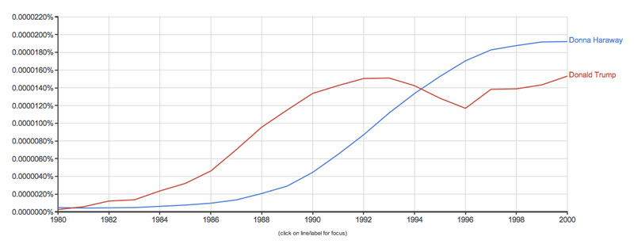
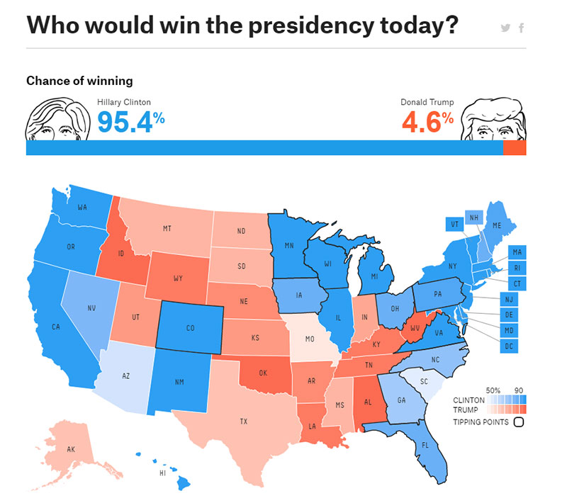
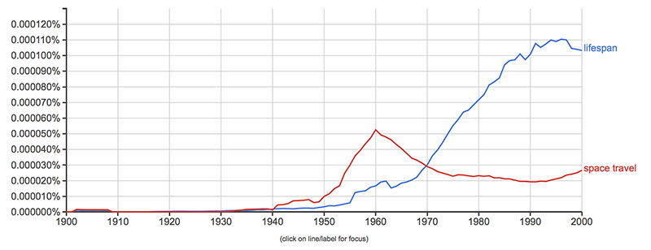
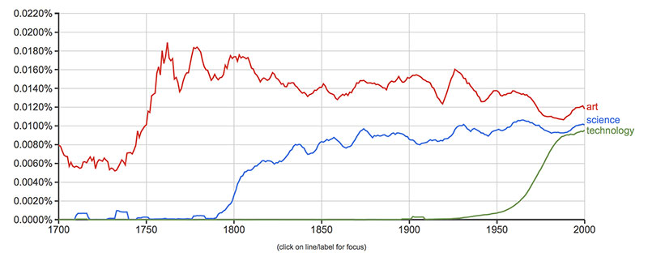

Fake news, artificial intelligence and data visualisation
| Date: | 2017 |
| Format: | Journal article |
| Index: | writing |

Google Ngram viewer chart from Capitalist Surrealism by Sean Dockray: Donna Haraway, Donald Trump
Fake news, artificial intelligence and data visualisation
Truth has been under pressure for the whole history of the World Wide Web, but it seems to have finally collapsed with Donald Trump’s election as President of the United States of America. After a series of minor experiments in which consumers of media became producers (think about Bertolt Brecht’s “Radio as a Means of Communication”, Bologna’s Radio Alice, public‑access television, zine culture, etc.), people have had not only read‑access but write‑access to the internet, through websites, mailing lists, chats. If these were once only marginal media, they have become indisputably dominant over the past ten years as major platforms like YouTube, Facebook, and Twitter have completely eclipsed traditional media, which have themselves become mere content producers among many for the platforms.
Whereas the New York Times, for example, may once have had a purchase on truth, reporting and organising the facts into the narrative of what is real, now the reporting in the Times becomes one data point among many as individuals organise their own systems of reality. It is as if everyone knows intuitively what the truth is and the various stories coming out of the media either confirm that intuition or are readily dismissed for their bias, constructed data, or failure to also present the opposite “viewpoint”. No amount of additional objective, informed argument will necessarily modify an intuitive truth because objectivity and information are already conceptualised as socially constructed and ultimately have no privileged relationship to reality.
In August 2016, before the US election, Facebook automated the section of its human workforce that had been “curating” news topics that were trending. Earlier in the year, these curators had been accused of liberal political bias, resulting in a meeting between Facebook CEO Mark Zuckerberg and several conservative politicians, media leaders, and staffers, including a senior Trump campaign aid. Under the algorithmic curatorial regime, still in its infancy, the amorphous phenomena called “fake news“ exploited the assumed equivalency of content, the relative open‑mindedness of artificial intelligence, and the receptive intuitional realities to circulate hoaxes, propaganda, and jokes within the new second‑order news cycle. If fake news is anything, it is not a category but the plasticity of data as it circulates through social networks. To take one specific example, an Uber driver near Los Angeles was charged with raping an unconscious teenage girl, as reported by local news station KABC. A couple days later, the website Jihad Watch added a religious spin to the story, which eventually spiralled into the right wing fantasy trope of a “rape jihad”.
Sean Dockray, Facebook screenshot to demonstrate the evolution of fake news story
It is a comforting thought that, with a little information, we might reveal the fake news as simply fake and not news at all, leaving the moniker “news” safely with the traditional journalistic establishment. But one problem with this thought is that establishment news has long been complicit in disseminating government talking points manipulated by public relations companies to mislead the public, to advance the march to war or to suppress democratic opposition. Hill & Knowlton, one such PR firm, produced dozens of (fake) news videos designed to sell Americans on Iraqi aggression towards Kuwait, such as the influential lie that Iraqi soldiers murdered 312 babies in incubators in Kuwait City. More than a decade later, Judith Miller’s inaccurate reporting for the New York Times about Iraq’s “weapons of mass destruction“ was used by the second Bush administration to make the case for the second war. These are just two high‑profile examples of a practice that has become mundane. The other problem is that fake news understands itself in such a way that it isn’t weakened by being categorised as “fake”. If anything, its fakeness is worn as a mark of distinction from the mainstream media, a badge of pride for “telling it like it is“, a welcome aspersion that signals independence to its target audience. Dutifully exposing fakeness by correcting the facts is like chasing shadows.
So where does that leave data visualisation? On the one hand, it seems like it would be an effective form for the present. Unlike the news article, a rhetorical production of some particular investigative journalist, subject to leaks, anonymous sources, and selective arrangement of evidence, the data visualisation ostensibly bypasses the mediating individual, by making complex, otherwise meaningless data accessible to the human sensorium with as little intervention as possible. The visualiser walks a fine line between aesthetic–technical virtuosity and invisibility. The final image is a result of a technological process and is no more authored than a stock ticker or a weather map. These images stand on their own, yet acknowledge their own partiality or incompleteness, always anticipating that they will be used within a larger narrative. The visualisation, in other words, is rarely an end‑point but a useful resource, a window into some body of data for someone to look through. Most importantly, web users have developed a diagrammatic literacy to be able to consume these interactive, technical images, these algorithmic productions, as representations of the world.
On the other hand, data visualisations don’t seem to have fared much better than news in the post‑truth moment. Trump supporters often complained that the polls were biased against them from oversampling and that their “movement” was much bigger than it appeared to be. Statistics should have come closer to reality than partisan self‑mythologising, but in a spectacular comeuppance for data scientists most polls and aggregators, including Nate Silver’s vaunted FiveThirtyEight, were completely wrong and Trump was elected. Even with publicly available data, open source visualisation software and constant public self‑analysis, the project of visualising the electorate became lumped in with “lies, damned lies, and statistics,” just more cogs in the influencing machine.

Screenshot of fivethirtyeight.com on the morning of the US Presidential election, 8 November 2016
While there were demonstrable errors and bias particular to US election polling, that same antipathy extends even to those visualisations where the consensus corresponds to observed conditions. The most significant images of the 21st century are those depicting the massive, slow motion apocalypse that we know as “climate change”. Overlaid on maps of the planet, swathes of temperature abnormalities expand and intensify. Arctic ice, a massive lid on Pandora’s box, slowly melts away. Tree species migrate towards the poles. Storms become stronger and more frequent.
Against mounting evidence, climate change sceptics cherry‑pick isolated phenomena, growing Antarctic ice for instance, or they make generalisations from local observations (“if the Earth is warming, then why is it so cold?”). They channel the spirit of Michel de Montaigne in their attentiveness to the particular, to what can be observed. Malcolm Roberts, Queensland’s sceptic senator from the One Nation party, continuously demands “empirical proof” of global warming from CSIRO in his submission to Parliament. Similar to how scholasticism served as the orthodoxy that Montaigne rejected, Roberts (and the climate change deniers more broadly) imagine the scientific community as “the tyranny of controlling opinions.” Rather than simply offer competing interpretations of the data, Roberts attacks the data itself as un‑scientific. In 2014 Australia’s Bureau of Meteorology was criticised by internet sceptics and the conservative press for the “homogenisation” of temperature data, a standard‑practice of eliminating non‑climate related bias, but seen by the disbelievers as nothing other than an implementation of political bias.
Roberts’ empiric appeal seems nostalgic, as if science has transformed into something unrecognisably complex and is no longer capable of simple experiment, observation, and analysis. And in some ways, a mutation has occurred, largely as a result of adapting scientific methodologies to planetary‑scale experiments and computational modelling. Against a backdrop of intuitive truth, science’s recent capacity for prediction and simulation seem to provoke a rebellion of scepticism. The discourse of climate change denial develops and circulates similarly to the far right: on blogs, social networks, and dubious news sites. Although their enemies differ, searching for deeper similarities yields common paranoia about a Global Government and total distrust of existing institutions. The deniers, importantly, do not reject science –their writing is full of charts and scientific mannerisms – but claim to have better science, largely by insisting that “the science is not settled.” Under this relativist slogan, their scientifically disproven hypotheses are still potentially real, ultimately because of the intuition that they are. Fake news still masquerades as news, even if only as a campy gesture and not out of belief that it will fool everyone (as opposed to the fictitious evidence presented before the Iraq War, which was intended to deceive).
I don’t actually think it makes sense to equate data visualisations with fake news, however it’s crucial to begin this essay with a consideration of how the two are caught up in the same historical winds. But how do they diverge? Like art, fake news tends to stay within the audience bubbles of people whose beliefs would be reinforced by the artefact, whereas visualisations break out more widely by virtue of their propensity to circulate. They are often attractive and surprising, with a punch line that demands a small amount of diagrammatic literacy; they are part of the lingua franca of the internet, appropriate to the context of digital networks, mobile devices, and variable attention spans; and, most importantly, they are not overtly authored. A certain trust in the machine has presided over the early history of internet data visualisations, allowing them a claim on truth and objectivity. They are readily deployed in news, law, government, activism, science, and finance – all impregnated by the internet in different ways – to communicate, to generate publicity, to make arguments, to influence opinion, or simply to understand complex phenomena.
Diagram created by 4chan to reframe Donald Trump’s Russia dossier, 11 January 2017
Unfortunately, the window seems to be closing. Post‑truth, sceptical relativists now take aim below the aesthetics, arrangement, and interpretation of data, and focus their attacks on the legitimacy of the data itself. Wikileaks, an important and often flawed project, provides the generic alibi for disbelief: if the information doesn’t support your intuition, it is not because you are wrong, but rather because of a latent #whatevergate that will eventually prove you right. Draining the swamp, attacking the BoM’s thermometers, cutting the Department of Statistics – and I might add the effective bans on journalists or mobile phones in Australian detention facilities – are all different fronts in the war on data. Each also systematically undermines the production of an informed citizenry, albeit in a less visible way than, for example, censoring public broadcast. Instead of prohibiting some information from being seen (because it violates standards of decency or morality), information is technically prevented from even existing in the first place. The deliberately inefficient firearm purchase records and the meagre historical data on police shootings in the US both exemplify this preemptive management of visibility. The interesting questions now involve asking how the dynamics of mobile phones, social media and algorithmic control participate in data’s production or destruction. Citizen videos of abuse at the hands of police and policies involving body cameras would both be part of this discussion.
Still, the war on data isn’t over. Visualisations are still effective inasmuch as they are the terms, to be advanced or refuted, of public debate because they’re often the only window that we have into complex phenomena. They are not so easy to ignore, at least not yet, as political caricature or photojournalism even though they might carry the same affective power. For the moment, they still seem to depict climate change or wealth inequality itself rather than its creator’s perspective on these things. So while the window is still open, we should continue making things visible, we should continue to make images and animations with data and try to influence the public debate.
But what happens when the window finally closes and visualisation no longer works? This question presumes human actors as an audience, rationally acting on information by consuming, voting, or deliberating. It suggests that the novel images of data will lose their impact, that data itself won’t convince us, who increasingly fall back onto our intuition and experience. But human‑centric assumptions fail to understand that the practice of data visualisation has larger stakes than using machines to represent complex information to people: at its core the practice of data visualisation, involving the production, storage, restructuring and transformation of data, the experimentation with machine learning, neural networks, and artificial life, in short all those intermediate steps just prior to visualisation, is a process of learning to think like and communicate with computational intelligences.
Science fiction offers innumerable depictions of storm clouds on the horizon, tales of out of control, autonomous technologies that threatens civilisation. Joshua, the war simulator in the film War Games (1983) fails to comprehend what is real and what is a game, bringing the world to the brink of global thermonuclear conflict. Observers will have witnessed the initial drops of rain in our own computational moment: viruses, pocket texting, flash crashes, unsupervised automated payments. A few years ago, YouTube’s “Content ID” algorithm for catching copyright violations erroneously sent me hundreds of cease and desist emails in response to my effort to upload every possible monochrome video to the site. In these moments, we humans are reduced to victims, observers, or at best collaborators in automatic processes over which we have no control. But there is a pleasure in this as well; anyone who has programmed a cellular automata or flocking algorithm will know that the program is only really working when it seems to have a mind of its own. And this pleasure is revisited every time an artificial intelligence creates psychedelic imagery, invents its own language, composes an alien pop Christmas carol, or conducts a strange conversation with Charlie Rose.
Map on computer screen in War Games, 1983. AF Archive/ Alamy Stock Photo
An autonomous system, consuming the world, reshaping societies, determining the trajectories of lives is nothing new, of course. We already know it as capital, which Karl Marx even characterised as “an automatic subject.” And although Adam Smith did not specifically call “division of labour” an algorithm, Gaspard de Prony applied that principle to mathematics to build a human computer that calculated logarithmic tables. This same technique was used centuries later by Herbert Simon and Allan Newell, reformatting Simon’s students and family members into parts of the algorithm when creating “Logic Theorist,” the first artificial intelligence program. Capitalism and artificial intelligence are no strangers, a fact that doesn’t escape us as our relays on the social networks flicker like synapses liking, sharing, playing, reporting as spam, viewing, skipping, hovering, and closing. We already are an AI – probably many – but without purpose or self‑understanding. That is why experiments that map the systems we inhabit, that test boundary conditions, and develop strategies for mobilising, interrupting, and escaping these systems are all imperative now. The variegated phenomenon, fake news, is more productively understood within these coordinates than as simple propaganda.
In the end, what I am trying to figure out is how to find room to breathe, immersed as we are in what Antoinette Rouvroy calls “algorithmic governmentality” and “data behaviourism,” a truth regime in which the time and space for interpretation, deliberation, and judgment has been squeezed to nothing by a preemptive computational order that “bypasses consciousness and reflexivity.” Data visualisation, in the traditional sense, makes abstract technological processes available to this slow space of human consideration. A necessary project, but one that fundamentally acts as if our world was somehow separate from, outside of the black box of technology, rather than thoroughly enmeshed within it. So far, it seems that the best opportunity for making the space out of which a future can grow is through an escape; not an escape that simply wishes the present away, but rather in the tradition of the escape artist who delights in playing with locks, chains, handcuffs, and diversions to momentarily, magically break free.

Google Ngram viewer chart from Capitalist Surrealism by Sean Dockray: Lifespan, Space travel

Google Ngram viewer chart from Capitalist Surrealism by Sean Dockray: Art, Science, Technology
Published
- Dockray, Sean. “Fake News, Artificial Intelligence and Data Visualisation.” Artlink 37, no. 1 (March 2017): 12–17.